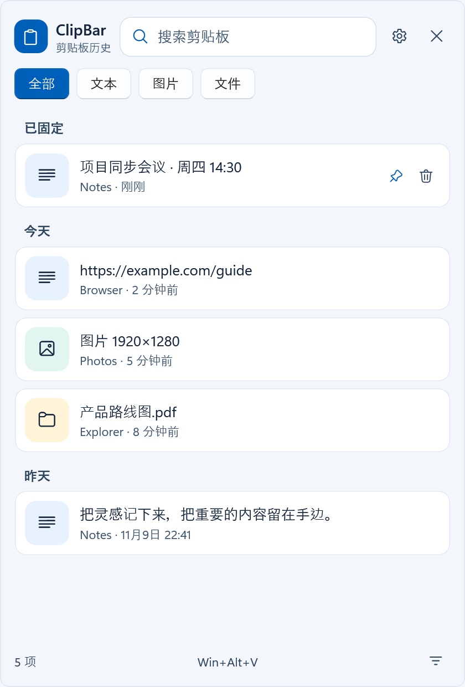
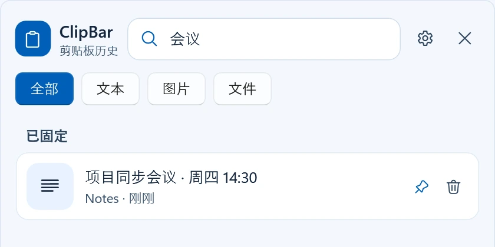
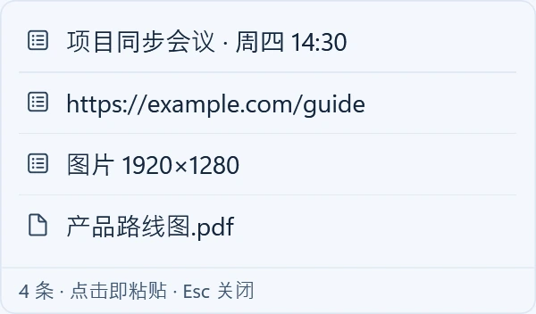

为 Windows 而做
复制过的，
随时找回来。
从一句话、一张图，到刚刚复制的文件。
收好你的剪贴板历史，让下一次粘贴更从容。
1.1.1 · Windows x64 · 安装版，无需先装 .NET

真实软件界面 · 内容为虚构示例
一次复制，不止一次有用。
- 文本
- 图片
- 文件
- 富文本与链接
找到它。留住它。
回到正在做的事。
不用重新打开网页，也不用来回翻文件。
常用内容，就在一次唤出之间。

手还在鼠标上？
就在指针旁打开。
开启原生浮动剪贴板后，在支持的文本输入区域按住鼠标，或拖选文字，即可唤出小入口。悬停展开紧凑列表，继续当前工作。
可在设置中关闭，按自己的习惯来。
网页只展示交互，不会读取你的剪贴板。
你的剪贴板，
不用交给云端。
Windows x64
让复制过的内容，
继续派上用场。
下载安装版，或用便携版直接运行。
从一次 Win + Alt + V 开始。
ClipBar 1.1.1
Windows x64 · 三种版本任选
无需预装 .NET Desktop Runtime
查看 SHA-256 校验文件这是 Windows 软件，手机可以浏览演示或保存下载链接。
开始之前，你可能想知道
安装版、便携版和轻量版，该选哪个？
优先选安装版：带开始菜单快捷方式和卸载入口，按用户安装、不需要管理员，卸载时保留历史与设置。想放 U 盘或不想在系统里留安装记录，选便携版，同样是自包含运行时。已经装过 .NET 10 Desktop Runtime（x64）的电脑可以选轻量版，体积最小。三者功能完全相同。
手机、Mac 或 ARM 电脑可以使用吗？
当前提供的是 Windows x64 程序，不是手机版或 macOS 应用，也没有提供原生 ARM64 构建。这个官网支持手机浏览，但软件需在适合的 Windows 电脑上运行。
下载后怎样打开？系统为什么可能提示警告？
运行下载的 EXE 即可。未建立签名或下载信誉的程序可能触发 Windows 安全提示；请先核对官方下载来源和 SHA-256，不要为运行软件关闭系统安全防护。
所有窗口都能自动粘贴吗？
不同应用可能限制模拟输入。ClipBar 以普通权限运行时，不会向管理员权限窗口自动注入 Ctrl+V；可以在目标窗口手动粘贴。不要为了粘贴把日常剪贴板工具提升为管理员运行。
能自己构建或查看源码吗？
可以。公开仓库提供源码和构建脚本；在 Windows 上准备 .NET 10 SDK，按照仓库说明构建。查看 GitHub 仓库。